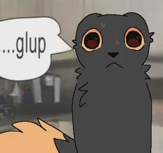

Survival Hub: Basic Tactics
Welcome to the core survival guidelines for Casualties: Unknown.
Basic Survival
Your expie consists of a lot of stats. Things like your body weight, water and food amound, total Leters of blood, blood presure, blood viscosity, brain health, and more. Learning to manage these stats(to the best of your abilites) can lead to many good runs and keeping your expie alive. The biggest thing to keep in mind is that all things you do in the game that are physical can use stamina, and being in the wrong position with no stamina will lead to certain death, being paitent is very important for survival. There is also keybinds (1, 2, and 3) to speed up time so you dont have to wait 30 min to heal your broken arm.
